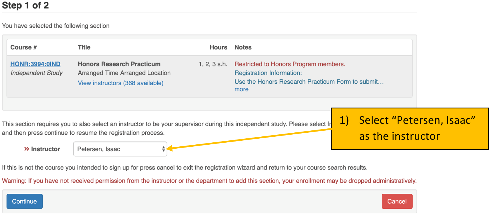
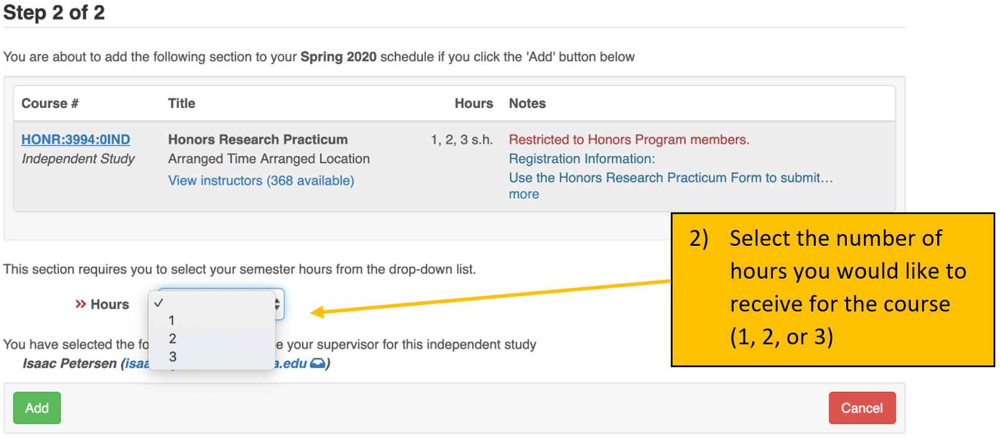

We are striving to improve the health and well-being of families and
communities by conducting research to advance the understanding of human
development.
Date drafted: May 2018
1.2 Internal Mission
Statement
As members of the Developmental Psychopathology Lab, we strive to
create, maintain, and improve a fun and collaborative culture. We commit
to bettering ourselves and others through respect, hard work, ethical
practices, support, and meaningful, lasting relationships. As a team, we
cultivate a supportive environment for a free exchange of ideas and
embrace the value of failure to foster personal and professional
growth.
Date drafted: August 2018
1.3 Diversity
Statement
We seek to include members of various cultural, ethnic, and
socioeconomic backgrounds so that our research might best represent the
families which make up our diverse communities. We aim to provide a
welcoming and respectful environment for people of all backgrounds.
Date drafted: October 2020
2 Lab Glossary
DevPsy Lab
shorthand for Developmental Psychopathology Lab
RA
research assistant
E
experimenter
TC
target child, or the child participant
PC
primary caregiver, often a child’s parent
coding
the term means different things depending on the context. In our lab, we
use “coding” as a shorthand to refer to “behavioral coding from video,”
which involves assessing a construct from video observation to turn the
video segment into numbers that can be analyzed. This is distinct from
computer programming, which is another type of coding.
RTFM
Read the ******* manual
RTFC
Read the ******* checklist
3 CITI Certification
Before you can interact with any data in the lab (including observing
visits) you must be certified on human subject research protocols. This
means completing the CITI training, which will upload to the IRB. You
will need to complete the Group 1 – Biomedical Research –
IRB-01 course. Instructions are below. If you have questions,
please follow this link: https://hso.research.uiowa.edu/certifications-human-subjects-protections-citi
On the Main Menu screen, under the ‘University of Iowa Courses’ tab,
in the ‘My Learner Tools for University of Iowa’ box, select the ‘Add a
Course or Update Learner Groups’ link
Select the “I am required to complete human subjects’ research
training.” to complete the IRB required course for certification in
Human Subjects Protections. Click on the ‘Next’ button.
Select Group 1 –Biomedical Research – IRB-01. Click on the ‘Next’
button.
On the Main Menu screen, under the ‘University of Iowa Courses’ tab,
click on the title of the course to enter course.
Click on the ‘Complete the Integrity Assurance Statement before
beginning the course’ link and complete. Click on the ‘Submit’
button.
Click on the title of the first module to begin.
Complete all of the required modules.
When you have finished the course, please send the Lab Coordinator a
PDF of the completion certificate.
If you have already completed the HSO/IRB certification, just
bring/send a copy of your certification. Please note, however, that it
must be Group 1 – Biomedical Research – IRB-01.
IMPORTANT: It is likely that you will receive an
email from the IRB upon completion of your IRB-01 CITI training asking
you to confirm your lab, PI, the study, or that you completed the
correct training. This is because it is uncommon for psychology labs to
complete the IRB-01 training instead of the IRB-02 training. IT IS
CRUCIALLY IMPORTANT THAT YOU RESPOND TO THIS EMAIL. If you do not, it
will delay our ability to add you to the IRB project, and thus delay
your ability continue RA training.
The basic information they may ask you to confirm is:
Department: Psychological and Brain Sciences PI: Dr. Isaac Petersen Which study or training: the IRB-01 study
4 Confidentiality
As part of every participant’s consent process, we promise that we
will protect their information. Therefore, it is imperative that all
identifying information related to our participants remains
confidential. Below are guidelines on how to handle study data and
participant information.
4.1 Handling Data
All hard-copy physical research data must remain in the lab. All
electronic data should be accessed from the lab, on university
computers, or secure private computers. Electronic data should not be
accessed on public computers. Identifiable electronic data (including
visit videos) should be stored only on the lab’s RDSS share and should
not be saved onto your computer.
4.2 No Talking About
Participants Outside of Lab
It is important that you not talk about participants outside
of lab. Even if you are talking to other RAs or people on our IRB
project, you never know who else might hear your conversation.
Therefore, you should never use participant names, addresses, physical
descriptions, or any other personally identifying information outside of
the lab space.
4.3 Photos and Social
Media
No one should ever take photos, screenshots, Snapchats, or any other
kind of video recording of lab data, including visit videos.
Additionally, no data or identifying information should be shared on
social media, through email, etc. Even when using Slack to communicate
with team members about visits or lab-related tasks, team members should
always use TCIDs and waves, which are de-identified, to refer to
specific participants/videos.
4.4 Remote Access
RAs should never access lab data remotely without permission or
direction from the Lab Coordinator, a graduate student, or the PI. This
is to ensure that the RA has received all of the requisite training,
instructions, and resources to properly access data remotely. After
receiving permission or direction to work on lab tasks remotely, it is
critical that all team members follow these basic guidelines:
No lab-related data or documents should be saved to your local
computer
All lab-related data or documents should only be opened when no one
else can see your computer screen or hear visit videos. Therefore, if
your parents/roommates/friends/etc. are in the room with you and can see
or hear the videos, DO NOT OPEN THEM.
5 How to Register Lab for
Credit
5.1 Regular Credit
Students who wish to receive credit for time spent in the lab may
register for
“PSY:3994:01IND – Research Practicum in Psychology”, “HONR:3994:01IND – Honors Research Practicum”,
or “URES:3992”. Generally, students enroll in
“PSY:3994” or, if they want Honors
credit, “HONR:3994”.
URES:3992 is 0-hour and has no tuition or fees
associated. It is recommended to enroll in URES:3992 when
you cannot take credit-bearing courses (e.g., if you are getting paid,
if you do not have the ability to maintain a regular schedule, etc.).
URES:3992 is also useful for students in the summer so you
do not have to pay the tuition and fees (which you will have to pay if
you take a credit-bearing course).
Keep in mind that some courses differ in the way that they are
graded.
Students receive a letter grade (see the section on Honors Credit) for PSY:4990 and
HONR:3994.
Students receive a Pass/Fail grade for PSY:3994.
There are several advantages to registering for course credit:
Your participation in lab will be included on your transcript, which
can look good when you apply to graduate/professional school and
jobs
If you meet the hours and expectations, it can also help your
GPA
The 10 hours per week you spend in lab will be accounted for in your
course schedule
5.2 Honors Credit
Students who wish to receive Honors credit for participation in lab
may register for
“HONR:3994:01IND – Honors Research Practicum”. In addition
to enrolling on MyUI, you can find the Honors Research Practicum
syllabus on the lab drive (to be read and signed by the RA and
Dr. Petersen) here:
\\lc-rs-store24.hpc.uiowa.edu\lss_itpetersen\Lab\Miscellaneous\Course Syllabi\
If you are completing an Honors project and thesis in the lab, with
approval by Dr. Petersen, you may enroll for
“PSY:4990 – Honors Thesis Research”. Advantages for
registering for honors course credit are:
Your work in the lab will be included on your transcript (letter
graded), which can look good when apply to graduate/professional school
and jobs
The 10 hours per week you spend in lab will be accounted for in your
course schedule
The hours accumulated in the lab can count towards your honors
experiential learning (up to 12 semester hours)
Interested students may be able to conduct an Honors project or
non-thesis capstone for Honors in the Psychology Major. For information
on conducting an Honors thesis/project, see here. Note that conducting an Honors
thesis/project is not a requirement for enrolling in
HONR:3994.
 
5.2.1 How to Fulfill the
Experiential Learning Requirement for Honors Credit
HONR:3994 and PSY:3994 will appear automatically on your Honors
degree audit as fulfilling part of the experiential learning requirement
for Honors credit.
A student can still receive Honors credit by registering for
URES:3992 or by participating in the lab on a volunteer basis without it
showing on their transcript (so long as the student still completes
their required 10 hours). However, these semester hours will not count
toward the experiential learning requirement unless additional steps are
taken.
Complete the Pre-Experience Questionnaire before the semester begins
Submit a Narrative (within 5 weeks of semester end)
This final project is flexible in its formatting, but an essay (the
typical choice) should be 500–1,000 words in length. This will allow you
to reflect on your experiences and how you grew. A couple images, an
author bio, and highlights of your experience are all required
components of this piece.
The Developmental Psychopathology Lab uses a “generalist with
specialization” approach—there are some tasks that all RAs are trained
to perform, and there are other tasks that RAs specialize in. We have
three specialized tracks or roles that RAs can train in after completing
basic lab training: Behavioral
Testing Specialist, Electroencephalography
(EEG) Specialist, and Data Specialist.
Every role is important. Placement in these roles
depends on each RA’s (a) interests, (b) aptitude, and (c) fit, in
addition to (d) the team’s needs. We take into consideration the desired
placement of every RA, but ultimately Dr. Petersen and the Lab
Coordinator make this determination based on a, b, c, and d from
above.
Below are cross-cutting responsibilities that all RAs are expected to
contribute to.
Cross-Cutting Responsibilities
data entry
coding behavioral tasks from video
keeping lab clean and family- and child-friendly
quality control and improvement
helping run visits
updating/editing coding manual as needed
auditing “Question and Answer” (Q&A) and “Quality Control
Improvement” (QCI) documents
providing answers to coding questions when applicable
6.1 Specialized
Roles
6.1.1 Behavioral Testing
Specialist
Below are necessary characteristics and potential responsibilities
for Behavioral Testing Specialists:
Necessary Characteristics:
works well with 3–7-year-old children and parents
positive and cheerful attitude
mature
able to quickly and easily soothe upset children
able to stay calm and composed in the face of pressure
able to follow a script with adherence yet flexibility to tailor it
to the individual child (based on the child’s age, interests,
intellectual capacity, etc.)
able to take feedback non-defensively and learn from feedback
confidence to remain in control of a chaotic environment
Responsibilities Could Include:
serving as an experimenter (E) for behavioral testing (lab visit 1;
LV1) visits
training new LV1 Es
assuring procedural adherence for LV1 (including coaching RA and
Camera roles, collaborating with other Es to ensure consistent
administration)
editing/updating LV1 manual procedures and scripts as needed
keeping LV1 observation room stocked and prepped for visits
having a lighter focus on coding
6.1.2 EEG Specialist
Below are necessary characteristics and potential responsibilities
for EEG Specialists:
Necessary Characteristics:
technical skills
attention to detail
confidence to remain in control of a chaotic environment
comfortable trouble-shooting issues with technical equipment (after
receiving extensive training); ability to follow strict procedures and
guidelines
works well with 3–7-year-old children and parents
mature
Responsibilities Could Include:
serving as an E for EEG (lab visit 2; LV2) visits
training new LV2 Es
assuring procedural adherence for LV2 (including coaching RA roles,
collaborating with other Es to trouble-shoot technical issues and assure
procedural adherence)
editing/updating LV2 manual procedures and scripts as needed
6.1.3 Data
Specialist
Below are necessary characteristics and potential responsibilities
for Data Specialists:
Necessary Characteristics:
professional communication skills
knows the study well (able to describe the study and consent form
thoroughly, can answer questions about the study)
able to interact well with people in the community for purposes of
making connections with schools/preschools/daycares for recruitment
highly organized
attention to detail
technical skills
creative for developing recruitment and retention tools and
discovering recruitment sources
comfortable in connecting with diverse people in diverse places
Responsibilities Could Include:
heavier focus on coding, coding tasks with advanced programs (e.g.,
Datavyu)
REDCap additions and edits (upon completion of advanced REDCap
training)
train new RAs in LV1 RA and Camera roles, and LV2 RA roles
help run visits in RA and Camera roles
recruitment and retention, including helping to develop/improve
current recruitment and retention systems and devising new recruitment
and retention possibilities, updating social media pages
helping to develop new coding systems
7 RA Advancement in
Lab
The DevPsy lab is happy to offer exceptional RAs the opportunity to
gain advanced research experience in the form of leadership roles within
the lab. Eligibility is at the discretion of the Lab Coordinator and
Dr. Petersen.
7.1 Eligibility
Criteria
Below are the eligibility criteria for advancement in lab:
Has been an active and engaged RA for at least 4 full semesters
Has shown a personal interest in the research being conducted in
lab/research in general
Meaningful and engaging research and leadership opportunities can be
helpful in building a CV and research background, but it also can
involve considerable work and responsibility. Therefore, prospective
Advanced RAs should be self-motivated and have
consistently shown that they are reliable and
capable of additional responsibility.
7.2 I meet the criteria,
what should I do next?
After you have met all the criteria and feel that you are ready to
pursue this opportunity, it is your responsibility to set up a
meeting with the Lab Coordinator and Dr. Petersen, and to determine
what types of responsibilities and projects you would like to lead. You
should be prepared to come to this meeting with a thought-out idea of
what projects and roles you are interested in given these new
responsibilities and privileges.
7.3 Potential Advanced
Roles
Some advanced roles that can be pursued include (but are not limited
to):
If you are already a Behavior Testing Specialist and want to
pursue further advancement to become an Advanced Behavior
Testing Specialist:
Lead E: training, supervising, quality control (procedural and data
audits) for LV1
If you are already an EEG Specialist and want to pursue
further advancement to become an Advanced EEG
Specialist:
Lead E: training, supervising, quality control (procedural and data
audits) for LV2
Preliminary help with data analyses and data processing (e.g., EEG
data)
If you are already a Data Specialist and want to pursue
further advancement to become an Advanced Data
Specialist:
Advanced coding responsibilities, including Datavyu coding, helping
develop new coding systems for tasks not currently being coded,
etc.
If you wish to be trained on Datavyu coding, you must commit to
staying in lab at least an additional 3 semesters from when training
begins.
In charge of recruitment and retention events/opportunities
Coming up with new ideas and systems for implementation
Contacting organizations to coordinate recruitment
Social media, postcards, newsletter, holiday cards, diplomas
7.4 Benefits of Assuming
an Advanced Role
Research works for your CV: One of the major perks
of this role is that you may be able to pursue a written piece of
research (paper, poster, conference presentation, etc.) that can be a
great boost for your CV!
Collaborative research projects in the lab: This can
take many forms (e.g., poster, paper). You are encouraged to ask a
current advanced RA, a graduate student in the lab, the Lab Coordinator,
and/or Dr. Petersen about what this may entail.
Reduced availability expectation: advanced RAs are
expected to make themselves available 1 night per week & 5 weekend
days per semester to train/coach new experimenters/run visits (when
needed).
Registering for Advanced Research Practicum in Psychology
(PSY:3995): if the RA’s role includes advanced participation in
lab-related research projects in such a way that includes significant
reading and writing (such as when performing an independent research
project), the RA may register for PSY:3995: “Advanced Research Practicum
in Psychology”. However, RAs should seek permission from Dr. Petersen
before enrolling in PSY:3995.
7.5 A Note About Other
Opportunities for Advancement
In addition to opportunities for advancement in lab, there may also
be opportunities to conduct independent research projects, to conduct an
Honors project/thesis, or to contribute to
papers, grants, or conference poster presentations. An important part of
professional development is learning to advocate for yourself and to
inquire about opportunities that are available. If you are interested in
gaining experience in a certain area of lab work, taking on a leadership
role, or if you are interested in an opportunity to take on a more
advanced role in the project, just ask! There may be opportunities
available for RAs to gain experience in specialized areas of lab work
(e.g., recruitment of participants, data processing) or even to earn
authorship on a paper or poster for an ongoing project. If you are
motivated to gain these kinds of opportunities, you are welcome to ask
and see what may be available. Advanced projects are given priority to
RAs who have shown reliability and commitment.
7.6 A Note About Lab
Hours for Advanced Tasks
As mentioned above, there are a number of opportunities to gain
advanced experiences in the lab. There may be an opportunity for some
experiences to count for lab hours if:
The project is assigned to the RA
The project benefits the overall lab
The RA has demonstrated proficiency in the skills needed to complete
the project
The project is not part of an Honors
project/thesis, or another independent research experience
For example, our lab leverages R
for a variety of tasks. RAs may be able to use R
to complete lab projects if they take the time outside of lab hours to
tackle the learning curve of R.
Furthermore, RAs may have an opportunity to learn how EEG data is
processed. These expectations are not meant to discourage RAs from
pursuing advanced experiences, but to set expectations for how these
experiences can (or in other cases cannot) count for lab hours. However,
even if experiences do not count toward lab hours, they are still
valuable learning experiences that can advance your professional
development in pursuit of your career goals. If you would like to learn
more about either of these opportunities, or any others, please reach
out to the Lab Coordinator.
7.7 Honors
Theses/Projects
For information on conducting an Honors Thesis/Project, see here.
8 Lab Buddy System
Our buddy system is a knowledge-sharing method that we use when
onboarding new RAs into the lab. Each new RA is paired up with an
existing RA who will guide them through their first weeks in their new
role. The exchange of information goes both ways. New RAs are encouraged
to share tips, knowledge, and techniques from previous experiences,
while the existing RAs makes sure that new lab members feel welcome.
During their first weeks, new RAs can feel very overwhelmed and lost,
because they are presented with considerable new information in a short
amount of time. Although new RAs typically have the essential skills and
interests to succeed in the lab, they are unfamiliar with the work
culture, the lab processes, and “unspoken rules1.” While the coding
team teaches the RA the coding and entry skills, a lab buddy helps a new
RA to ease their transition during the orientation phase and provides
guidance and advice in a more informal setting. The goal of the buddy
system is that new RAs feel welcome and have someone in the lab they can
connect with. New RAs should be introduced to their buddy at the end of
their orientation session.
9 Scheduling
9.1 Scheduling System
Overview
After course registration at the end of each semester, RAs are to
submit their course schedules for the following semester to the Lab
Coordinator. If an RA has a strict, set work schedule, this can be
included with the course schedule. We will do our best to accommodate
work schedules; however, classes (including lab) take precedence over
work schedules. The Lab Coordinator will review everyone’s individual
schedules and create a lab schedule that best allows visits to be
scheduled, while respecting RA course schedules and—as best as
possible—other responsibilities. Once the Lab Coordinator has finalized
the lab schedule for the semester, they will email each RA their weekly
lab schedule. This weekly lab schedule consists of 10 total hours per
week. This includes 9 weekly hours of lab time, during which RAs may run
visits, help with recruitment, complete data entry and coding tasks,
assist the Lab Coordinator with assigned tasks, etc. Additionally, all
RAs are expected to attend a one-hour lab meeting every week when the
entire team assembles to discuss lab-related issues and science. Once
the semester schedules have been sent out to all RAs, it is expected
that RAs schedule other events around their scheduled lab hours to the
best of their availability (i.e., there are no major schedule changes
that would impact an RA’s scheduled lab hours for the semester).
By the first day of the new semester, RAs are expected to submit to
the Lab Coordinator their standard weekly availability. This should
include all normally occurring weekly availability during which the Lab
Coordinator can schedule them to run visits that occur outside of an
RA’s normal lab hours. This availability schedule should include at
least two available weekday evenings (M–F) per week. The Lab Coordinator
will keep a composite schedule of RA weekly availability to use in
scheduling visits when additional coverage is needed beyond RA lab
schedules. If an RA is scheduled to run a visit during their
availability but outside of their normal lab hours, the RA will be
notified of the visit details via an invitation to the Outlook calendar
event, but the Lab Coordinator will not reach out to them before
scheduling to confirm their availability. The RA is expected to accept
the invitation to the calendar event in Outlook.
If scheduling commitments come up throughout the semester during any
time that an RA submitted as part of their weekly availability, they are
responsible for adding it to the shared Outlook “Busy Calendar”
(RES-DPL-Busy) so that the Lab Coordinator knows not to schedule them.
It is acceptable for an RA’s available evenings to vary week to week,
but all RAs are expected to maintain at least two available evenings
every week. RAs are responsible for any visit they may be scheduled to
run during the availability they provide at the beginning of the
semester. Therefore, it is imperative that all appointments and events
that occur during their normal weekly availability are shared with the
Lab Coordinator via the “Busy Calendar” as soon as possible.
If an RA has been scheduled for a visit during their availability
(including available time on weekdays, available evenings, and chosen
weekend days), has been notified of this visit, and cannot run the visit
due to an unexpected conflict, the RA is responsible for posting on the
#scheduling channel on Slack to ask for a cover. It is the
RA’s responsibility to let the Lab Coordinator know who will cover the
visit. If unable to find a cover, it is the RA’s responsibility to let
the Lab Coordinator know by at least 48 hours before the visit.
For information regarding weekend visits, please refer to the section
regarding the Weekend On-Call
Schedule.
For general information regarding the scheduling expectations for
undergraduate RAs of the Developmental Psychopathology Lab, please refer
to the section on Scheduling
Expectations.
9.2 Weekend On-Call
Schedule
9.2.1 Introduction
To ensure that the coverage responsibility for visits scheduled
outside of normal lab hours is shared equally among all lab members, RAs
are expected to sign up for at least 8 weekend days each semester when
they will be “on-call”. Please note, this does not mean that you will be
expected to come into lab for every day you sign up. This does mean that
if a visit needs to be scheduled on a weekend day, the Lab Coordinator
may schedule you to help run that visit without first contacting you to
ask if you are available.
You are expected to stay available to run visits on the days you are
signed up for until 24 hours prior. The Lab Coordinator will not
automatically schedule you for a weekend or evening visit without 24
hours’ notice to lab members. The Lab Coordinator may request volunteers
to run visits that are scheduled “last minute” (i.e., within 24 hours),
but you are not expected to be available for “last-minute” visits unless
they occur during your scheduled lab hours. If a weekend visit is
scheduled and you are on-call that day, the Lab Coordinator will tag you
in a Slack with the details of the visit.
If you can no longer help run a visit you have been scheduled for, it
is your responsibility to find another RA to trade with you. Ultimately
everyone is expected to be on-call for at least 8 weekend days per
semester (apart from Advanced Specialists; see the section on RA Advancement).
9.2.2 Preparation
To ensure the process is as efficient as possible, please bring your
calendar with your weekend availability for the semester. Bring a
written list of the weekend days you cannot be on-call for that
semester.
9.2.3 Procedure
The Lab Coordinator will set up separate meetings with behavioral
testing specialists, EEG testing specialists, and data specialists/new
RAs during the first week of the semester. At these meetings, the Lab
Coordinator will conduct the weekend scheduling.
Everyone draws a number.
Pass the sign-up sheet around your group from lowest number to
highest number, and every RA will sign up for one day per turn. Each
round, the order reverses (i.e., snake order). That is, whoever gets the
first pick in round 1 gets the last pick in round 2. Continue this
process to sign up for days until everyone has signed up for at least 8
days each. Note that this may mean signing up for a day that you are
unavailable (in order to sign up for 8 days).
Data Specialists and new RAs will sign up for RA slots—the Lab
Coordinator will schedule RA and Camera roles interchangeably (i.e. RAs
will be randomly assigned either a Camera or RA role by the Lab
Coordinator).
Trained returning RAs (Behavioral Testing Specialists, EEG
Specialists, and Data Specialists) should prioritize signing up for
visits earlier in the semester first, if possible. When the new RAs
complete training for visit roles, they will be able to help with visits
later in the semester.
After everyone has signed up for 8 days, RAs will have an
opportunity to trade days with each other (see below).
Once this process is complete, the sign-up form will be kept in the
Lab Coordinator’s office and remain there for one week. During this one
week, RAs will have the opportunity to make any final adjustments
necessary (i.e., trade days with other RAs). RAs must notify the Lab
Coordinator of any trades/changes to their weekend sign ups within this
week. Remember, at the end of the one week, everyone should still be
signed up for a total of 8 days, and everyone will be responsible for
helping run any visits that may be scheduled on those days.
9.3 Shared Calendars
How to add the shared calendars:
Open your personal Office 365 Outlook calendar
Select “Add Calendar” towards the top of the screen
Here is a description of the different calendars and instructions how
to use them:
RES-RA-LC-Sched
This calendar has your individual schedule in the lab. It is
color-coded by RA. You can view but not edit this calendar. Changes to
this need to be discussed with the Lab Coordinator and/or
Dr. Petersen.
Developmental Psychopathology Lab
This is the general lab calendar. It has lab events (e.g.,
participant visits, lab meeting, recruitment events). You can view but
not edit this calendar.
RES-DPL-Busy
This is where you are expected to mark yourself as unavailable for
any scheduling commitments that come up during the weekly availability
you submitted at the beginning of the semester, this includes time you
may be taking off from your normal scheduled hours. Thus, if you are
going to be unavailable during your regularly scheduled hours you must
update this calendar. To do so, you will create a calendar entry that is
titled “[Your Name] Busy” and add the current LC as a required attendee.
This will notify the LC of your request for time off and allow them to
accept or decline the request. Additionally, you must put in the
description the reason for why you are not available during your
regularly scheduled hours (i.e. over hours, doctors appointment).
If your request is within 48 hours of the day you wish to be
off, you must create the calendar entry AND slack the current
Lab Coordinator in the #lab-time channel.
9.4 TimeClock
OpenTimeClock2008 is the program we use for keeping
track of RA lab hours. Each RA is expected to clock in before beginning
lab-related work (including running visits, but if you come in early to
each lunch, visit with other RAs, or anything else NOT lab work-related,
then do not clock in until you are ready to work), and to clock out when
they have stopped lab-related work (e.g., if you leave to get lunch,
please clock out then clock back in again when you return to work). The
Lab Coordinator will add you to the system using your
HawkID. To set up your profile the first time you use the
program, follow the steps below:
In the “Company Name” textbox, type devpsylab and click
the blue “Sign In” button
Enter your HawkID in the “Username” field and click the
“Login” button.
Go to “My settings” at the top of the page.
Check the “Change password” box, and create a new password in the
subsequent boxes (i.e., “Current password” which can be left blank as
you will not have a password until you set one up for yourself, “New
password,” and “Confirm new password”). Then click the “Save”
button.
NOTE: If a pop-up window appears asking if the website can
have permission to access your location, be sure to click yes or accept.
TimeClock login is GPS-restricted, so the program may not work if it is
not allowed to verify your location.
To use this program to view your current hours for the semester:
Login to your account and click on “List view” at the top of the
page.
Filter your days worked by adjusting the dates at the top left of
the screen to encompass the current semester (either by typing in the
relevant dates, or by using the dropdown calendars by clicking the
calendar icons).
Once you have selected the target timeframe, look at the top
right-hand side of the screen above the table. There, you will find text
that reads “total hours,” and should list your total time clocked-in in
hours and minutes. If you are unsure of how many total hours you need
for a semester, ask the Lab Coordinator.
10 The Basics of Lab
10.1 Lab Meetings
Lab meetings will take place once per week at a pre-determined time.
The Lab Coordinator will choose the weekly lab meeting time based on
everyone’s schedules and will try to schedule the meeting for a time
when all lab members are available. Lab meeting is the most important
time that the team has together every week, because it is the only time
that everyone is present, and it helps everyone stay on the same page as
part of working as a team. Attending lab meeting is
mandatory.
The lab meeting is generally divided into two sections:
The first 15–30 minutes of the meeting is reserved for lab
announcements, as well as any updates or questions about the study. If
you have questions or suggestions, please raise them.
The second half of the meeting is reserved for an article discussion
or a professional development workshop.
10.1.1 Article
Discussion
Each lab meeting (with the exception of the meetings reserved for
professional development workshops), an RA is expected to lead the
discussion of a peer-reviewed, empirical research article of
their choosing that is related to the interests (broadly defined) of the
Developmental Psychopathology Lab. Article discussions serve several
purposes:
in the spirit of getting course credit for lab experience, article
discussions provide a seminar forum for learning about science
article discussions help students connect the work they are
conducting in the lab to the broader scientific field
they help students gain greater skill in reading and critiquing
scientific articles, which helps people be more critical consumers of
information in society
they provide a space to explore scientific ideas and the potential
practical implications of science
they provide opportunities to gain skill in leading a discussion,
which is an important public-speaking skill
they provide opportunities in learning to digest complex concepts
and to communicate them in a way that is understandable and relevant to
others
they provide a nonjudgmental space to get out of your comfort zone
and to grow intellectually and professionally
RAs will sign up to lead discussion of an article on the Lab Meeting
Article Sign-Up Sheet (shared via OneDrive or during lab meeting) during
the first week of classes. If there are fewer days available than there
are RAs, priority is given to newer RAs or to RAs who have had fewer
opportunities to lead the discussion of an article. All lab
members are expected to contribute to each discussion.
By Monday of the week the article will be discussed, the RA picking
the article should post 1) the article PDF (the actual PDF file of the
article, not the URL link to the PDF) and 2) the full APA-style
reference in the #lab-meetings channel on Slack. For more
information on how to find and access articles, see here. For more information on APA
formatting, see the resources on the lab drive:
\\lc-rs-store24.hpc.uiowa.edu\lss_itpetersen\Lab\Miscellaneous\Professional Development\General ProfDev Materials\APA Formatting\
The RA who is leading the discussion of the article should structure
the discussion following the format below:
Provide a brief explanation of why you chose the article.
Present a brief summary (~2–3 minutes) of the article’s main points
(it is not a book report!), in which you describe the study and its key
findings.
Spend the majority of the time (~20–25 minutes) posing questions to
elicit discussion. The questions should not be too vague (e.g., do not
ask “What did you think of the methods?”), but instead should be
specific and aim to elicit an interesting and critical discussion. You
can also mention critiques you have, but keep it as question-oriented as
possible to elicit discussion.
Save time (~10 minutes) for big-picture questions pertaining to the
implications of the findings for science/practice/policy/life, etc.
10.1.2 Lab Meeting
Scribe
An RA will be designated (usually on a volunteer basis) each semester
to be the lab meeting scribe. The scribe is responsible for taking notes
throughout the meeting. The scribe also sends a brief summary of the
important information from the meeting to the entire team via the
#lab-meetings channel in Slack after the lab meeting has
ended. The scribe also adds the summary to the “Lab Meeting Agendas –
Team” in the lab’s OneDrive.
10.1.3 Attendance and
Absence Policies
All members of the team are expected to attend every lab meeting. If
an RA is unable to attend a meeting, they are responsible for letting
the Lab Coordinator know as far in advance as possible so that the Lab
Coordinator can work with the RA to arrange how they will make up the
time. They are also responsible for emailing several detailed questions
or comments on the article to the presenting student AND to the lab
email (devpsy-lab@uiowa.edu) by the day before the meeting to
help contribute to the discussion. If advanced notice is not possible,
contact the Lab Coordinator as soon as you are able to and explain the
absence. The RA is also responsible for reading the lab meeting agenda
and summary notes after the meeting to learn what they missed.
10.2 Lab
Communication
Forms of lab communication are described below. Please use
Slack for as much communication as possible! Keeping
lab-related communication on Slack helps our team work most effectively
and efficiently, and it saves time for the Lab Coordinator,
Dr. Petersen, and your team members because it allows other RAs to
answer questions and allows people to jump in to provide corrective
feedback, as necessary.
Non-private lab-related communication (almost all communication)
Feel free to send messages and you can notify particular people if
the message is for particular people (@isaac-petersen).
You can send pictures and attachments in Slack by using the plus
sign next to the message.
Slack communication can be informal! We want it to be a fun place to
communicate and chat with the team. Feel free to post memes, set up
lab-wide social gatherings, etc.
Examples: Sending your course schedule for the upcoming semester,
notifying Lab Coordinator of an absence due to personal reasons/illness,
asking Lab Coordinator for a reference, responding to an email that the
Lab Coordinator sent to you.
Communication directed specifically to Dr. Petersen rather than to
the lab (e.g., to set up a meeting to discuss career goals, honors
projects, etc.)
It is inappropriate and unprofessional to gossip about lab personnel
(i.e., complaining about someone behind their back to other RAs). If
someone gossips to you about concerns/conflicts/complaints with lab
personnel, please ask them to deal with the person directly, or to
address the issue directly with the chain of command (see below).
If the conflict/personnel issue is with a peer, the first step is to
attempt to address the problem with your peer directly. If the
conflict/personnel issue is with a peer, and you are unable to resolve
the problem or you feel that this first step would be too difficult or
uncomfortable for you, then please bring this to the attention of your
direct supervisor (graduate student, postdoctoral student, or Lab
Coordinator). If the conflict/personnel issue is with your direct
supervisor and you are unable to resolve the problem or you feel that
this first step would be too difficult or uncomfortable for you, then
please bring this to the attention of your main supervisor
(Dr. Petersen). Please express personnel concerns directly (in person or
by email). Do not put personnel grievances in lab reports. We encourage
you to express concerns to the chain of command if you feel the issues
impair your or the team’s functioning.
10.2.2 Slack
10.2.2.1 Getting
Started
Download the “Slack” App to your mobile phone (it is free!)
You can also access Slack on any internet browser (https://slack.com)
Create an account with your university e-mail and a password you
will remember
Enter the workspace URL “devpsy-lab.slack.com” (the Lab Coordinator
should have added you to the workspace prior to your start in lab as
part of your onboarding)
Make sure to add yourself to all the following “Channels”
#announcements
#good-news
#irb
#lab-admin
#lab-design
#lab-meetings
#lab-time
#measures
#procedures
#quotes
#random
#recruitment
#redcap
#scheduling
#visits
#website-socialmedia
10.2.2.2 How/When to
Use
Channels: All channels are a certain category or topic of
conversation so that it is easier to locate previous discussions
relevant to that topic
To notify specific people in your message, type “@” and then enter
in their username before typing your message (usernames are located on
the left side of the screen)
@everyone notifies everyone (only admins can use)
@channel notifies everyone in the channel
#random: Use this channel if you are running late to
lab, or if you have a question or comment that does not fall within the
other channel categories; can also put memes or random funny things
here!
Attachments: Send pictures and attachments by clicking the plus sign
next to the message
Direct Messages: Do not use direct messaging in Slack. If you need
to communicate privately with the Lab Coordinator or Dr. Petersen,
please use email (see the section on Lab
Communication for more information)
Slack channels are meant to organize conversations within broad
overarching topics, but within each channel we want diverse conversation
to span the gamut of each topic. For example, the #coding
channel should include conversations ranging from discrepancies between
two coders on a given task, to technical discussions about Datavyu, to
general questions to the Lab Coordinator and Dr. Petersen about the
constructs measured in a given task, to all of the procedures, systems,
and programs in between. Think of each channel as a “theme” rather than
a specific “topic of conversation.” You should simply choose the channel
that seems most relevant to the question or comment you want to share
and have at it! It is important to remember that, even though different
team members are assigned different tasks within the lab, it does not
mean that it is any less important for the whole team to stay informed
about the general projects of the lab. We are all collaborating on the
same project, on the same team, and working toward the same general
goals.
1st assigns a reviewer (member 2 icon shows on card)
Reviewer makes comments and removes their icon—signaling to 1st that
task is ready for updates
1st reads comments and makes updates
1st assigns final reviewer (member 3 icon shows on card)
Final reviewer makes additional comments and removes icon (signaling
member 1 that changes have been reviewed and is ready for final updates)
OR determines that task is complete and moves card to
DONE column.
10.2.4 Social Media
The purpose of our social media pages is to inform the outside world
of our research. One to two members of the Data Specialist team are responsible for
creating posts. All posts must be approved by the Lab Coordinator.
10.2.4.1 Facebook
Private Facebook Group
The purpose of this private group is to communicate with past and
future RAs, as well as to organize fun activities outside of lab.
You will have to request permission to join the group
Once you have been added to the group, you can access the
discussion, the members, events, and photos shared to this group
Public-Facing Facebook Page
The purpose of this page is to inform the outside world about the
research, inform about changes (e.g., safety precautions, new team
members) and provide updates (e.g., new research findings, conferences,
grants, events in the lab).
The purpose of this Twitter account is to post updates with the
outside world about things we are working on in the lab. We invite
everyone to follow us on this platform, so we can get the word out about
what we do!
The purpose of this Instagram account is to post updates with the
outside world about things we are working on in the lab. We invite
everyone to follow us on this platform, so we can get the word out about
what we do!
We strive to maintain accurate, detailed, and step-by-step manuals or
checklists for all lab procedures. Written documentation is important
for many reasons, including that it facilitates training, reduces the
likelihood of human error, allows us to share our processes with others,
and increases replicability. If we are missing written documentation for
something, please let us know and help us create a manual or
checklist!
Just as important as creating written documentation is using it! Checklists
to remind surgeons to wash their hands significantly reduce infection
rates (archived at https://perma.cc/4Q62-ER5T); we are doing much more
complicated work than washing hands, so it is crucial to follow our
manuals and checklists. When you are training in a new procedure, do not
rely just on what other RAs tell you. Despite their best efforts to help
you, RAs may sometimes describe procedures incorrectly to you, and it is
important to follow what is in the manual. If something is missing,
incorrect, or out-of-date in the manual, please let us know so we can
fix it.
“For RA Edit”: The documents in this folder allow for editing by all
team members. This folder includes:
Lab Meeting Agendas – Team.docx: This is the running
agenda for our weekly lab meetings. Every week, the lab scribe will add detailed meeting notes to this
document
Lab Meeting Article Sign-Up.docx: This document is used
by every RA at the beginning of every semester to sign up for the day
they lead the article discussion. RAs can then access it throughout the
semester to check which day they are scheduled to present on, but should
not alter their sign-up day without first obtaining permission from the
Lab Coordinator
Task Timing Sheet.xlsx: This Excel document is used by
all RAs to record their coding progress (see Coding Manual
for more information)
“For RA View”: The documents in this folder allow for read-only
access by all team members.
“Lab Reports”: This is where you should save your bi-weekly lab
reports throughout the semester. Lab report folders can only be accessed
by the RA who owns it, the Lab Coordinator, and Dr. Petersen. Each lab
report folder has a subfolder named “Past Lab Reports_HawkID” which
should be used to archive old lab reports—in other words, every time you
save a new lab report to your root lab report folder, you should move
the previous one to the “Past Lab Reports_HawkID” folder.
10.5 Lab Drive
#1 Rule: Never delete any documents or data without explicit
permission from the Lab Coordinator, graduate students, or Dr. Petersen
first.
If there is an old or outdated document, like an outdated checklist
or an old coding form that has since been re-coded, do not delete it.
You may move it to an “00-Old” folder (see Folder Designations below), or, if you
are unsure where it should be saved, consult your fellow lab members or
the Lab Coordinator.
10.5.1 File Naming
Conventions
Because the Lab Drive contains so many files across so many different
tasks, TCs, and areas of the research process, it is imperative that all
files are carefully named following a descriptive, standardized naming
convention. All file names should be ALL lowercase, except when
using the following established lab abbreviations: LV1/2, or T1/2/3/4,
or TC/PC/PP/SC.
For visit-related files in “Coding”, “Entry”, and
“Payment” folders, the file name should include:
TCID, wave, and task/document type (e.g.,
1000_36_consent).
For files within “Coded Data”, coding form files should
also include which coder the form is from (e.g.,
1000_36_grasssnow_coder1).
For files within “Scoring”, scoring form files should also
include which scorer the form is from (e.g.,
1000_36_maps_scorer1).
For visit-related files within “Payments”, file names
should also indicate which visit or caregiver the receipt is from (e.g.,
1000_36_receipt_LV1, 1000_36_W9_SC).
Any IRB documents in the IRB folder
(\\lc-rs-store24.hpc.uiowa.edu\lss_itpetersen\Lab\Studies\School Readiness Study\IRB\)
that are stamped with an expiration date (e.g., recruitment materials,
consents) should also indicate the year in which they are valid (e.g.,
informedconsent_2018). When these materials expire, they
can be moved to the “00-Old” folder within the relevant parent
folder.
10.5.2 Folder
Designations
Old: This file designation is used to store versions of
documents that are outdated—this applies both to previous versions of
active, updated documents as well as documents that are no longer in
use.
Admin: This file designation is used to store miscellaneous
admin-related documents (e.g., spreadsheets, checklists, etc.) that
cannot logically be placed in another folder within the same parent
folder. These folders are not meant to be a “junk drawer” to deposit new
files, rather they are a clearly identifiable home for important files
that do not have another obvious home, so they are not loose in a parent
folder. If new documents are created that could logically be paired with
a document in a 01-Admin folder, then do create a new
folder and move the related file from 01-Admin into the new
folder with its related documents. If a new folder needs to be created,
contact the Lab Coordinator.
A Note About Creating New Folders:
The RA should ask the Lab Coordinator, Dr. Petersen, and graduate
students before creating a new folder within the Lab Drive. RAs are able
to create new TCID folders in their check data folders of their coding
or entry task, as well as any new folders within their personal folder
on the drive.
10.5.3 RA Folders
For every RA who joins the lab, we create two folders that are only
theirs to use: their member folder and their lab report folder. Member
folders and lab report folders are named using the RA’s
HawkID.
10.5.4 Member
Folders
Member folders can be found on the lab drive here:
\\lc-rs-store24.hpc.uiowa.edu\lss_itpetersen\Lab\Members\
Member folders should be used for any lab-related work (excluding lab
reports). They can be accessed by anyone in lab, including other RAs, so
it is not advisable to save any personal or confidential documents
within a member folder. However, if you ever work on a lab-related
project (e.g., recruitment material, helping to develop a new task or
coding system, etc.) any relevant documents should be saved in your
member folder. When RAs graduate from the lab, these folders are
archived so if we ever need to go back and find documents used in
previous projects we have them saved.
10.5.5 Lab Drive
Directory—Frequently Used Folders
Members
01-Lab Reports
Individual RA files, by HawkID
Individual RA files, by HawkID
Miscellaneous
Professional Development
RAs
RA Lab Hours
Folders are broken down by Semester and Year, and
include RA Lab, Availability, and Weekend On-Call Schedules
RA Task Assignments
Folders are broken down by Semester and Year, and
include Coding, EntryCheck, and Lab Cleaning Schedules
Studies
School Readiness Study
Coding
Data
IRB
Payment
Procedures
Recruitment
Scoring
Videos
Training
Orientation
Checklists
REDCap
Videos
PDF text versions of video training information, by
topic
Website
Photos
Banner
Pictures
Tabs
10.5.6 Google Drive
Sometimes, the lab creates documents in Google Drive for purposes
such as sharing, professional development workshops, etc. So the lab
retains access to these documents, please transfer ownership to
Dr. Petersen when creating them. To transfer ownership, right click the
document, click “Share”, add Dr. Petersen (isaactpetersen@gmail.com), and select “Transfer
Ownership.”
10.6 Lab Access /
Keys
Sometimes when visits occur outside of normal lab hours (M–F,
9AM–5PM), the Lab Coordinator is unable to be present to open lab or
lock up. In these situations, it is permissible for RAs to open or close
the lab on their own (provided the Lab Coordinator has
requested/approved this). When this happens, the RA can retrieve the lab
key from the lockbox or from the Department. If the RA is unable to
retrieve the key from the lockbox, follow the steps below:
WHERE to get keys to open the lab:
The RA can access the key lockbox on the lab’s entry door so that
all RAs assigned to help with a visit during the Lab Coordinator’s
absence can access the lab
If the Lab Coordinator or graduate students are in the lab and their
door is open, they are more than happy to lend their key to open lab
doors.
The key lockbox passcode is changed every semester—the Lab
Coordinator will provide RAs with the current passcode as needed
If the key lockbox was used, the spare lab key should be returned to
the key lockbox after the lab is fully locked up (see below) so that RAs
on other visits can access the lab as well
If the RA cannot retrieve the lab key from the lockbox (for whatever
reason), you can retrieve the key from Carrie Whittaker, who sits at the
front desk in the PBS department main office (G60 Psychological and
Brain Sciences Building)
If lab keys were taken from the department, return to Carrie when
done
The Spare Lab Key: BAA35 = All doors to the suite (Rooms
109–119)
HOW to Lock Up:
If you are leaving the lab and no one else is in the lab make sure
to lock:
All doors using key BAA35
RA and Coding rooms
All testing and observation rooms
Kitchen space
Waiting room
Exterior door in the hallway
Return keys to appropriate location—e.g., to the lockbox, to the Lab
Coordinator, or to Carrie (wherever it was taken from)—and be sure to
lock the lockbox.
10.7 Phone
Procedures
When the phone rings, and the Lab Coordinator is unavailable, it is
the RA’s job to answer the phone.
Upon answering the phone, say, “Developmental Psychopathology Lab,
this is _____ [your name]”.
If the person has any questions, answer them to the best of your
ability
If you do not know the answer, ask one of the other RAs, the Lab
Coordinator, or Dr. Petersen
If you still do not know the answer, write down their question on
the “While you were out” cards, and let them know that we will call them
back as soon as possible
If the person is looking for the Lab Coordinator or Dr. Petersen,
let them know that they are unavailable, but you can take a message if
they would like.
Write who called, and their message, on the “While you were out”
cards that are next to the phone in the RA room.
If they would like to call back later, and you know when they (the
Lab Coordinator and Dr. Petersen) will be back, let them know when would
be a good time for them to call back
10.8 Bi-Weekly Lab
Reports
Lab reports serve important purposes:
they provide a channel of communication between you and
Dr. Petersen
they help you gain experience and practice with writing, which is
important for many careers
they provide an avenue for you to make suggestions that can help
improve the lab and study. (Of course, you can make suggestions to the
team in other ways, too.)
Follow these instructions when submitting lab reports:
Lab reports are due by 5pm on Friday every other week throughout the
semester.
Write the lab report in Microsoft Word and save it as a
.docx file. This is important so that Dr. Petersen can
comment on the file.
Save the reports to the the folder with your HawkID in the “Lab
Reports” folder:
Name the lab reports so that they are ordered by date (e.g.,
Lab Report_2017-12-31.docx).
When saving lab reports, please leave only the newest lab report in
the main folder—your old lab reports should be moved to the “Past Lab
Reports_hawkID” folder within your personal lab reports folder.
Bi-weekly reports include:
A brief description of what you worked on the last two weeks
What you have found interesting and why
Questions you have
Suggestions you have
In general, you do not need much discussion of what specifically you
worked on (2–3 sentences is fine). Dr. Petersen is most interested in
what you have found interesting (and why), and any questions or
suggestions you have.
Reports should be a full page, double-spaced.
Dr. Petersen will read and comment on your reports. Please review
his comments and feel free to address anything he raised with him or
with the Lab Coordinator.
After reviewing the comments, put the prior lab report into your
“Past Lab Reports” folder.
Notes:
If you have concerns about individual(s) in lab, please let the Lab
Coordinator or Dr. Petersen know directly (in person or by email). Do
not put personnel grievances in lab reports.
10.9 Tips and Tricks for
Interacting with Children in Lab
10.9.1 When Interacting
With Families in the Lab
We strive to ensure families are as comfortable as possible in the
lab. We want to be non-judgmental. Families should not feel like they
are being tested. If a family feels they are being tested, they may also
feel they have failed if a task does not go as expected. For example, if
we instruct a parent not to let their kids touch the toys and the kid
does, we leave open the possibility a family could be embarrassed.
If a family asks you a question such as:
“Do you ask us to stop our kids from touching the toys to see if they
will do it?”
Our response could be:
“We want to simulate as close to a home and school environment as we
can. We just ask that you act normally.”
10.9.2 How to Give
Praise
Syntax: Praise + Effort + Specific
Acknowledging:
“I know this game is hard.”
“I know this game is tricky.”
Praise:
“Thank you for”
“I appreciate”
“I really like”
“I notice”
“I can see”
“I can tell”
“I’m so impressed”
“I’m proud of you for”
“I’m so happy with you for”
“I like it when”
“Way to”
“Nice job”
“You’re doing a nice job”
“That’s a great way to”
“You should be proud of yourself for”
“It’s nice that you are”
Effort:
“doing your best”
“trying so hard”
“working so hard”
“your effort”
“getting through those”
“concentrating so hard”
“kept playing”
Specific:
“sitting so still like a statue”
“sitting so quietly”
“catching the fish”
“not catching the sharks”
“sorting the flowers”
“not touching the mushrooms”
“sorting the apples”
“not touching the worms”
“sorting the sheep”
10.9.3 How to Guide
Children Through Difficult Tasks
10.9.3.1 DOs
The following are “Do”s when working with children in the lab:
Build rapport early
Use comments and compliments more than questions; questions can be
perceived as commands
Comment on things they like (e.g., their shoes, hair, shirt,
favorite superhero)
For anxious children: they will know you are safe by judging their
parents’ cues, so for an anxious/clingy child, first build rapport with
parent and then it will be easier to build rapport with child after they
know you’re safe
Make sure the chair is not too big for the child (i.e., their feet
solidly reach the floor)
Make it into a game!
Use high positivity and energy: be like a “preschool teacher on
crack” (in EEG especially)
Both in terms of verbal AND nonverbal techniques
Focus on the child rather than the script in the EEG visit
What you say matters less than how you say it (as long as
you correctly explain the rules)
If the child is not doing what you want, focus on what you expect
them to do instead of what you do not want them to do
“Here, hold this toy” or “Keep your hands on the table” instead of
“Don’t touch the…”
Use specific praise (“Nice job sitting so still!”) rather than
general praise (“Nice job!”)
Praise effort, not outcome
“Thank you for trying so hard on these” instead of “Nice job
answering these”
Use distraction and redirection (e.g., talking to the child about
the movie when putting on the EEG net)
Model appropriate behavior
Sit and watch the screen during the task
Help the child feel more comfortable with the task
Put the EEG cap on yourself (or on a parent)
Let them touch the EEG cap
Give them choices we’re okay with
“Would you rather wear the red cape or the blue cape?”
Use Grandma’s Law:
“When you finish catching the fish, you can have some candy.”
“First sit down in your chair, and then we’ll play the game.”
Have the child take breaks
physical exercise (e.g., doing wiggles or jumping jacks) or playing
a game can help children re-focus
Give the child juice/candy/snacks (if the parent is okay with
that)
10.9.3.2 DON’Ts
The following are “Don’t”s when working with children in the lab:
Don’t ask commands in the form of a question (“Can you sit up in
your chair?”)
Instead: Be polite but firm. (“Sit up in your chair” or “Please sit
up in your chair” or “Let’s sit up in your chair.”)
Don’t frame things in the negative (or the absence of
negative)—i.e., don’t provide reassurance (“It’s going to be okay” or
“It’s not going to hurt.”)
Instead: frame things in the positive (“Let’s put on the special
ocean cap to be just like Jamie so we can play the fun games!”)
Don’t ask yes/no questions to “no birds”
Instead: Give them choices we’re okay with (see above)
Don’t focus on the child’s distress and/or apologize
Instead: Distract, redirect, and be positive—children respond to
your verbal and nonverbal cues!
10.10 Participant
Payment
10.10.1 Rules
Cash is the preferred method of payment (lab participants/PC
only)
Checks will be arranged as compensation for PP and SC when they
complete the online questionnaire
Participants will be compensated according to the escalating payment
schedule
Participants/PCs may be compensated for parking
Payment to PP and SC only processed after the questionnaire is
verified as completed
All payment documents must include TCID, Wave, and date of
service.
No documents should ever contain participant SSN’s (unnecessary for
our level of compensation)
10.10.2 Payment in Cash
Issued to PC/Participant in the Laboratory
Each day, the Lab Coordinator will place individual payments in
sealed envelopes with the TCID and Wave labeled on the envelope. This
envelope will only include compensation for the lab session in which
they participate, not compensation for parking.
A separate envelope with exactly $10 in $1 bills will be kept in the
file drawer where the locked cashbox resides. This money will be
designated for parking compensation. If this cash is added to the
participant’s compensation on a given day, the TCID, date, and amount
needs to be written on the extra cash envelope, and this amount should
be reflected on payment receipts.
After payment has been made, relevant data will be entered in the
Excel spreadsheet ledger (in the payments folder in on the lab drive).
The Lab Coordinator is responsible for entering cash data in the
ledger.
Each participant and the RA will sign a payment receipt form
confirming that they received payment. Receipt must include TCID/Wave,
data of service, amount distributed, and signatures of both participant
and RA handling payment.
11 Professional
Development
One of the goals of our lab is to advance the career and professional
goals of our team members. We provide many professional
development-related resources on the lab drive in the following
location:
The resources include resources on applying to graduate school,
internships, postbacs, and medical school, comparing different mental
health fields (e.g., clinical psychology, counseling psychology, school
psychology, clinical mental health counseling, marriage and family
therapy, social work), how to find programs, and resources on academic
skills (e.g., reading scientific articles), cover letters, CVs/resumes,
personal statements, standardized tests (e.g., GRE), and prior lab
workshops on topics such as statistics and interviews. Please take
advantage of the many resources available to help you succeed. And, if
you have helpful resources, please give back by sharing them on the lab
drive.
12 Lab Organizational
Chart
Lab Organizational Chart
Let us know if you perceive any “unwritten rules.” We
try to limit implicit (“unspoken”) rules to the extent possible.
So-called “unspoken rules” should either be made explicit or they should
be removed entirely.↩︎


10.2.4 Social Media
The purpose of our social media pages is to inform the outside world of our research. One to two members of the Data Specialist team are responsible for creating posts. All posts must be approved by the Lab Coordinator.
10.2.4.1 Facebook
Private Facebook Group
The purpose of this private group is to communicate with past and future RAs, as well as to organize fun activities outside of lab.
Public-Facing Facebook Page
The purpose of this page is to inform the outside world about the research, inform about changes (e.g., safety precautions, new team members) and provide updates (e.g., new research findings, conferences, grants, events in the lab).
10.2.4.2 Twitter
The purpose of this Twitter account is to post updates with the outside world about things we are working on in the lab. We invite everyone to follow us on this platform, so we can get the word out about what we do!
@devpsylab10.2.4.3 Instagram
The purpose of this Instagram account is to post updates with the outside world about things we are working on in the lab. We invite everyone to follow us on this platform, so we can get the word out about what we do!
@dev_psy_lab